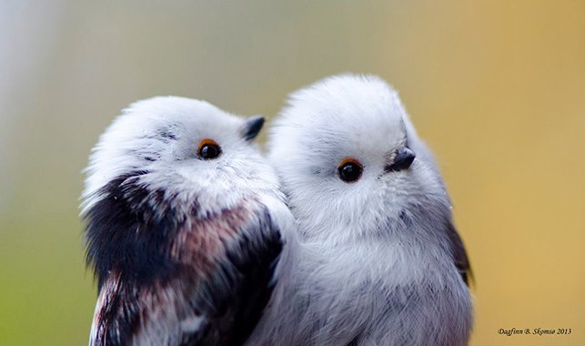

hello world? 안녕 세상아? 반갑다.
멋진
김지수는 8월 27일부로 웹을 만들기 시작했다.
이것은 멋진 제목이라네
이것은 덜 멋진 제목이라네
동에번쩍
서에번쩍
웹페이지를 만들고 있는데, 내가 만든 결과물을 바로바로 확인할 수 있다는 점에서 매우 흥미롭다.
수업은 영상이 아닌 게시물로 읽고 있는데.. 문과 출신 분께서 작성해서 그런지 감동적이다.
나도 이렇게 멋진 사람이 될 수 있을까....

일단 영탁부터 보고 차차 생각해보도록 하자
영탁이 누군데?
근데 왜 하필 영탁 사진을 올린거지?
- 잘생겨서

- 웃는게 매력적이어서
- 노래를 맛깔나게 잘 불러서
암튼 나는 멋진것이다.
그렇게 알아둬라.